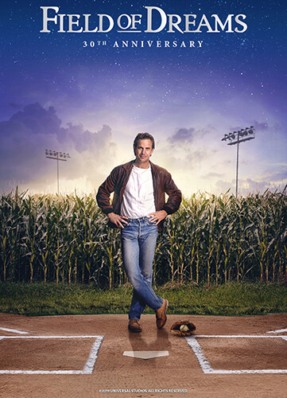
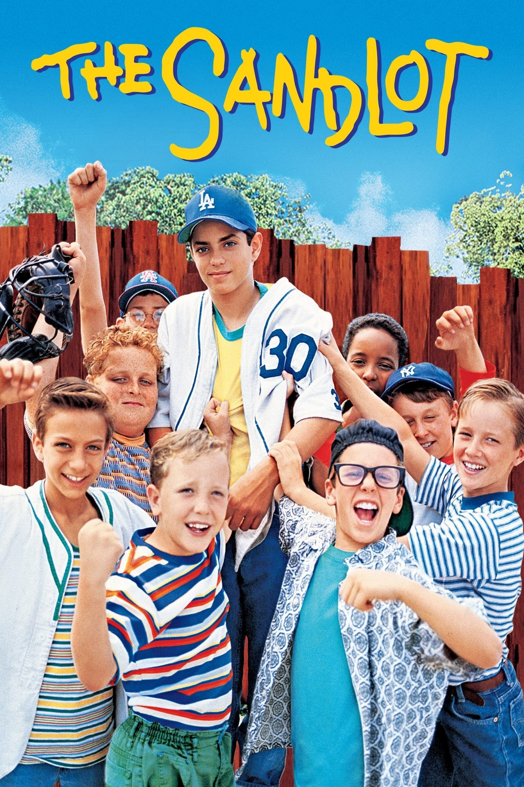
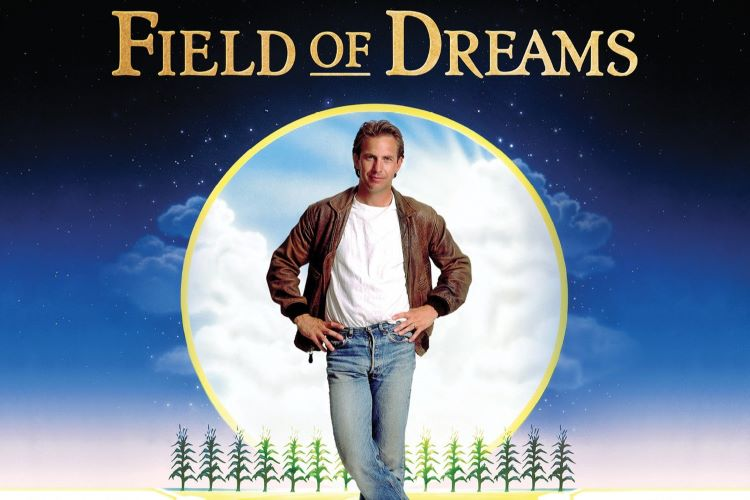
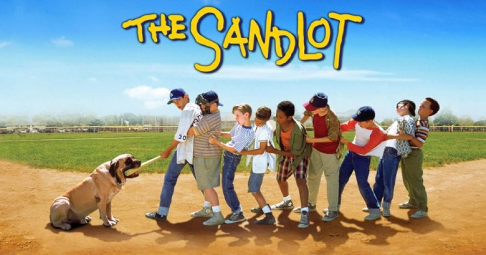

Synopsis: Iowa farmer Ray Kinsella hears a mysterious voice inspiring him to build a baseball diamond in his cornfield. Driven by faith, he creates a magical sanctuary where the ghosts of legendary ballplayers—including "Shoeless" Joe Jackson—return to play the game once more.
Back to the top
Synopsis: In the summer of 1962, a new kid in town joins a neighborhood baseball team on a local sandlot. Together, the boys share unforgettable adventures, coming-of-age moments, and a terrifying quest to retrieve a priceless baseball signed by Babe Ruth from a legendary junkyard dog named "The Beast."
Back to the top
Synopsis: Facing a severely restricted budget, Oakland Athletics general manager Billy Beane collaborates with an Ivy League economics graduate to reinvent how a baseball team is assembled. By relying on statistical data analysis over traditional scouting intuition, they challenge conventional wisdom to build a competitive club.
Back to the top